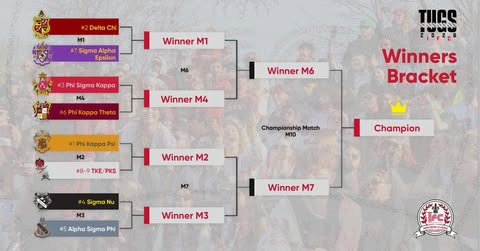

What started in 1967 as a friendly tug-of-war match over the East Lagoon during NIU’s Spring Fest, has now become and a battle of brotherhood's between Fraternities across campus.
More than just a competition, Tugs builds lasting bonds within fraternities. The months of training leading up to matchweek create unforgettable memories and bring Alumni together, strengthening the Greek community.
NIU Tugs raises significant funds for charitable causes, and brings the Undergrads, Alumni, and Community together, making a real difference in the lives of others.
| Year | 🏆 Champions | 🥈 Runner-Up |
|---|---|---|
| 2020s | ||
| 2025 | Phi Kappa Psi | Delta Chi |
| 2024 | Sigma Nu | Phi Sigma Kappa |
| 2023 | Sigma Nu | Phi Sigma Kappa |
| 2022 | Sigma Nu | Phi Sigma Kappa |
| 2021 | Phi Sigma Kappa | Alpha Sigma Phi |
| 2020 | No Tournament (COVID-19) | |
| 2010s | ||
| 2019 | Sigma Nu | Phi Kappa Psi |
| 2018 | Phi Sigma Kappa | Phi Kappa Theta |
| 2017 | Phi Kappa Theta | SAE |
| 2016 | Phi Sigma Kappa | SAE |
| 2015 | SAE | Phi Sigma Kappa |
| 2014 | Phi Sigma Kappa | SAE |
| 2013 | Phi Sigma Kappa | Phi Kappa Theta |
| 2012 | Phi Sigma Kappa | Pike |
| 2011 | Sam-Psi | Phi Sigma Kappa |
| 2010 | Phi Sigma Kappa | PKPS |
| 2000s | ||
| 2009 | Pike | Phi Sigma Kappa |
| 2008 | Pike | Phi Sigma Kappa |
| 2007 | SigEp | Pike |
| 2006 | SigEp | Pike |
| 2005 | SigEp | Pike |
| 2004 | Pike | SigEp |
| 2003 | Skulls | Pike |
| 2002 | Pike | Skulls |
| 2001 | Pike | Skulls |
| 2000 | Pike | Skulls |
| 1990s | ||
| 1999 | Pike | Sigma Pi |
| 1998 | Pike | Phi Sigma Kappa |
| 1997 | Pike | Delta Upsilon |
| 1996 | Delta Upsilon | Pike |
| 1995 | Delta Upsilon | Pike |
| 1994 | Pike | Delta Upsilon |
| 1993 | Pike | Phi Sigma Kappa |
| 1992 | Pike | SigEp |
| 1991 | Pike | Delta Upsilon |
| 1990 | Pike | SigEp |
| 1980s | ||
| 1989 | Pike | SigEp |
| 1988 | Pike | Sigma Chi |
| 1987 | Pike | Sigma Pi |
| 1986 | Sigma Pi | Pike |
| 1985 | Pike | Sigma Pi |
| 1984 | Pike | Sigma Pi |
| 1983 | Pike | Sigma Pi |
| 1982 | Pike | Sigma Pi |
| 1981 | Pike | Sigma Pi |
| 1980 | Pike | Sigma Pi |
Interested in participating or learning more about NIU Tugs?
Email: niutugs@gmail.com
Follow us on social media for updates and announcements
Follow NIU IFC on Instagram for live updates, match results, and everything Greek Life at Northern Illinois University.